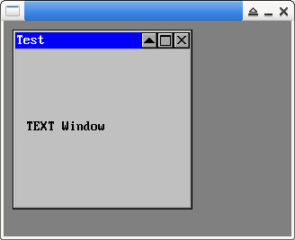

參考資訊：
https://github.com/piyushpandey013/ucGUI
https://github.com/yongzhena/ucgui-linux
main.c
#include "GUI.h"
#include "TEXT.h"
#include "FRAMEWIN.h"
int main(int argc, char *argv[])
{
TEXT_Handle hText = 0;
FRAMEWIN_Handle hFrame = 0;
GUI_Init();
GUI_SetBkColor(GUI_GRAY);
GUI_Clear();
hFrame = FRAMEWIN_Create("main", 0, WM_CF_SHOW, 10, 10, 200, 200);
FRAMEWIN_AddCloseButton(hFrame, FRAMEWIN_BUTTON_RIGHT, 0);
FRAMEWIN_AddMaxButton(hFrame, FRAMEWIN_BUTTON_RIGHT, 0);
FRAMEWIN_AddMinButton(hFrame, FRAMEWIN_BUTTON_RIGHT, 0);
FRAMEWIN_SetText(hFrame, "Test");
FRAMEWIN_SetFont(hFrame, &GUI_Font8x16);
hText = TEXT_CreateAsChild(10, 100, 100, 30, hFrame, 100, WM_CF_SHOW, "", TEXT_CF_HCENTER);
TEXT_SetText(hText, "TEXT Window");
TEXT_SetFont(hText, &GUI_Font8x16);
FRAMEWIN_SetActive(hFrame, 1);
GUI_Delay(1000);
FRAMEWIN_Delete(hFrame);
GUI_Delay(3000);
return 0;
}
編譯、執行
$ gcc main.c -o main libucgui.a -IGUI_X -IGUI/Core -IGUI/Widget -IGUI/WM -lSDL $ ./main
